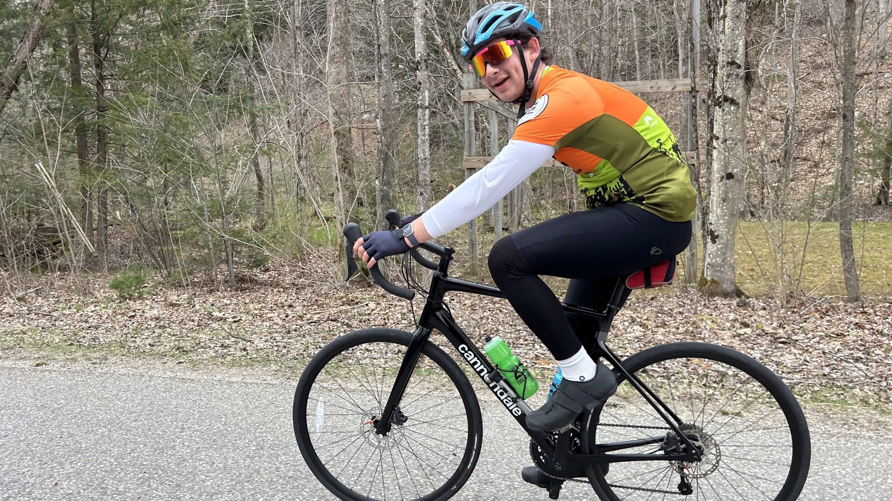
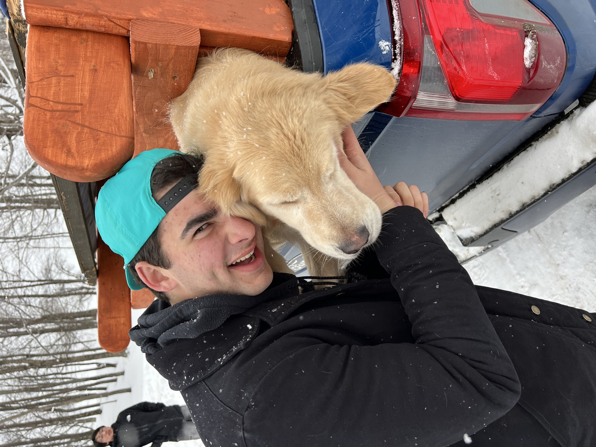

About
I'm a St. Louis, MO native, currently a senior at Middlebury College double-majoring in Mechanical Engineering and Math. Middlebury doesn't run its own full engineering program, so I spent my third year studying mechanical engineering at Dartmouth before coming back to Middlebury to finish out senior year.
On top of coursework, I'm a tour guide and teaching assistant at the Middlebury Makerspace, and I was a TA for Kurt Gross's "Ski Fabrication & Design" class, where students build and machine their own skis from scratch.
Most of what's on this site started the same way: a problem worth solving, a CAD model, and then a lot of arguing with a mill, a laser cutter, or a 3D printer until it actually worked.

